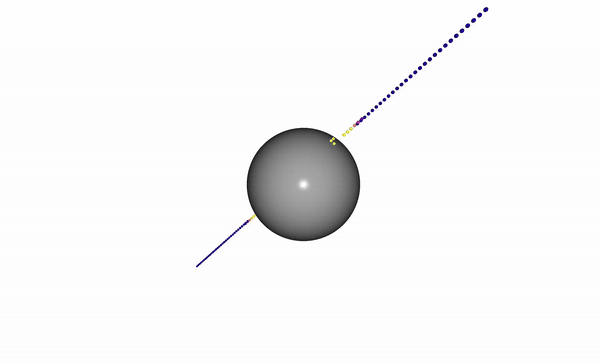

Trajectory Optimization#
This example demonstrates using the Euclidean Signed Distance Field (ESDF) querying functionality
in nvblox_torch to perform trajectory optimization.
In order to allow torch to perform gradient descent, via automatic differentiation,
the example utilizes the ESDF gradient, which is computed by nvblox automatically
while querying the distance field.
Running this example produces a trajectory which starts initially in collision with a sphere and is optimized to be collision-free.
python3 -m nvblox_torch.examples.gradients.trajectory_optimization_example

The code for this example can be found at trajectory_optimization_example.py
Details#
In this example we demonstrate:
How to use
mapper.query_esdf()to represent collisions with the environment.How we can use
torchfunctionality to optimize a trajectory to avoid collisions.
We generate a toy-problem scene which contains a single sphere and store the a reconstruction
of this environment in a Mapper object.
mapper = get_single_sphere_scene_mapper(
scene_size=SCENE_SIZE,
voxel_size=VOXEL_SIZE,
center=CENTER,
radius=RADIUS,
)
We will be optimizing a Path.
A Path, in this example, is represented as a set of points along it’s length.
The Path class is inherited from torch.nn.Module
such that the points are stored as torch opimizable parameters and are accessible
by a torch optimizer.
The forward method just returns the current positions of these points.
We initialize the points by uniformly sampling between the start and goal points.
class Path(torch.nn.Module):
"""An optimizable path represented as an Nx3 tensor of points."""
def __init__(self, points: torch.Tensor):
super().__init__()
self.points = torch.nn.Parameter(points)
def forward(self) -> torch.Tensor:
return self.points
path = Path(initial_points)
At each step of the opimization we need to generate a cost associated with the current shape of the path. We formulate this cost as a combination of:
Collision cost: This is a function of the distance to an obstacle (in this example, the sphere). During optimization, the effect of this cost will be to push the trajectory out of collision.
Stretching cost: This cost is proportional to the distance between subsequent points on the path. During optimization this will encourage the path to take the shortest path between the start and the goal, by penalizing the path from stretching from its initial length.
Boundary cost: This cost (soft-)constrains the start and end points of the path to the start and goal points specified by the problem.
The collision cost is determined by querying the ESDF computed by an nvblox_torch Mapper object:
points = path()
query_spheres = vectors_to_zero_radius_spheres(points)
distances = mapper.query_differentiable_layer(QueryType.ESDF, query_spheres)
The call to query_differentiable_layer(QueryType.ESDF) looks up the value of the ESDF at each point in query_spheres.
During the query, nvblox also computes the gradient of the ESDF at each point, which is
stored, in order to facilitate back-propagation with torch.
We compute the rest of the costs and add them up:
cost = stretching_cost + collision_cost + boundary_cost
We then optimize the path using torch’s automatic differentiation:
cost.backward()
optimizer.step()
The result is the visualization above where the path bends to avoid collision.
For a fully-fledged GPU path planning library for robotic manipulation, that uses
nvblox as the underlying collision engine, see cuRobo [1].
References#
[1] Sundaralingam, Balakumar, Siva Kumar Sastry Hari, Adam Fishman, Caelan Garrett, Karl Van Wyk, Valts Blukis, Alexander Millane et al. “curobo: Parallelized collision-free minimum-jerk robot motion generation.” arXiv preprint arXiv:2310.17274 (2023).